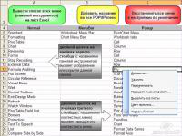
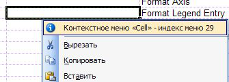
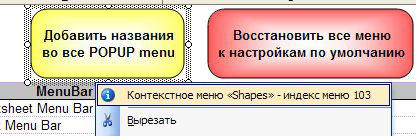

 Макрос для облегчения работы с контекстными меню и панелями инструментов в Excel. Программа выводит список всех контекстных меню и панелей инструментов, доступных в текущей версии Excel. Дополнительные возможности:
Кроме того, есть возможность добавить во все контекстные меню по одному пункту (кнопке), содержащей название и индекс данного выпадающего меню (popup) Вызвав нужное контекстное меню, можно увидеть его название и индекс:  
|